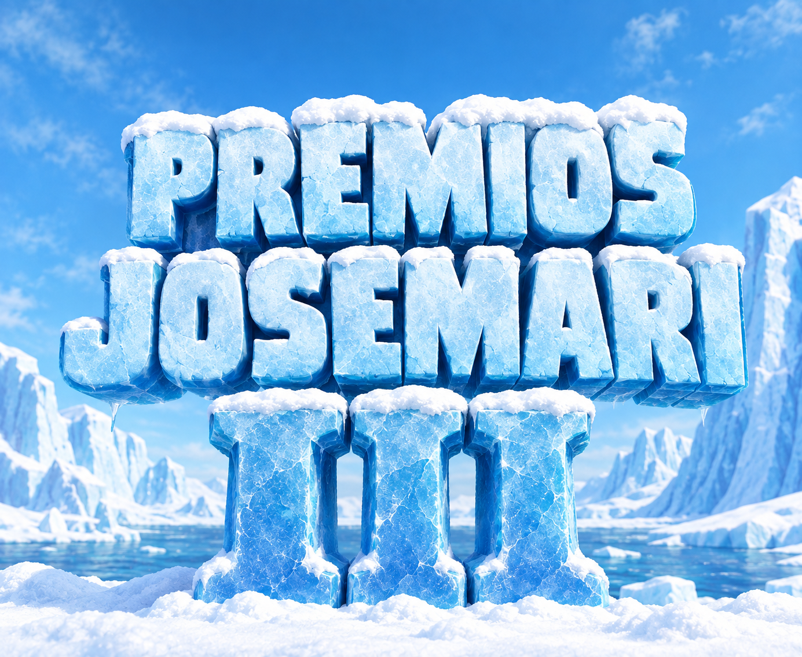
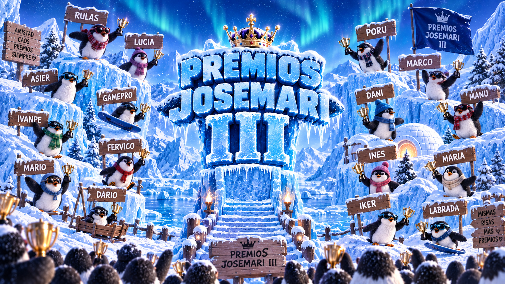
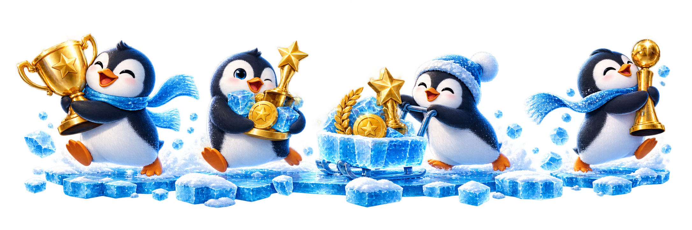

Bingo Polar
Cada participante tendrá su propio cartón con situaciones que podrán ocurrir durante la gala. Cuando sucedan, se irán completando las casillas.
🔒 PRÓXIMAMENTE

❌ Usuario o contraseña incorrectos
❄ Solo participantes invitados ❄
Una nueva expedición al hielo. Vuelven los nominados, los momentazos, las categorías míticas y muchas sorpresas. Descubre quién participa, explora los premios y prepárate para votar en la gala más fría de la historia de los Josemari.
D.E.P. Roberms y Fermoriv.




Dos galas, muchas autistadas y muchos momentos que quedaran para la historia
Lo que pasa en los Josemari, se queda congelado.Donde comenzó la leyenda.
Las fotografías y los ganadores de la primera edición.
La segunda expedición de los Josemari.
Los momentos que hicieron historia en los Josemari II.
Estas son las categorías confirmadas de la tercera edición. Próximamente se añadirán las categorías restantes.
Cuando comience oficialmente la fase de nominaciones, podrás elegir aquí a tus candidatos para cada categoría de los Premios Josemari III.
Cuando se conozcan los nominados definitivos, podrás votar aquí a los ganadores de cada categoría.
Tus nominaciones y tus votos aparecerán aquí cuando comiencen oficialmente las votaciones de esta edición.
La zona de juegos de los Premios Josemari III. Nuevos juegos se irán desbloqueando antes y durante la gala.
Cada participante tendrá su propio cartón con situaciones que podrán ocurrir durante la gala. Cuando sucedan, se irán completando las casillas.
Cuando estén todos los nominados podrás predecir quién ganará cada categoría. Al acabar la gala veremos quién ha acertado más.
Hay secretos escondidos por toda la web. Encuéntralos todos para completar el Archivo Secreto Josemari.
Secreto todavía sin descubrir.
Secreto todavía sin descubrir.
Secreto todavía sin descubrir.
Secreto todavía sin descubrir.
Secreto todavía sin descubrir.
Has encontrado todos los secretos de los Premios Josemari III.